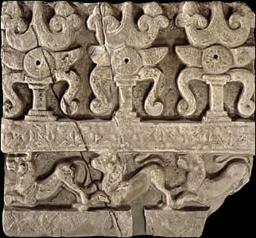

Top of Dome slab
The top of the slab shows a row of symbols called triratnas. The triratna is a symbol representing the Three Jewels of Buddhism: The Buddha, The Law set out by the Buddha, and the monastic brotherhood. These three elements are the most important and precious in Buddhism which is why they are called jewels. Below the triratnas is a row of lions. Lions were important symbols of power and protection. Lions and other wild animals appear in many places on the Amaravati Stupa. |